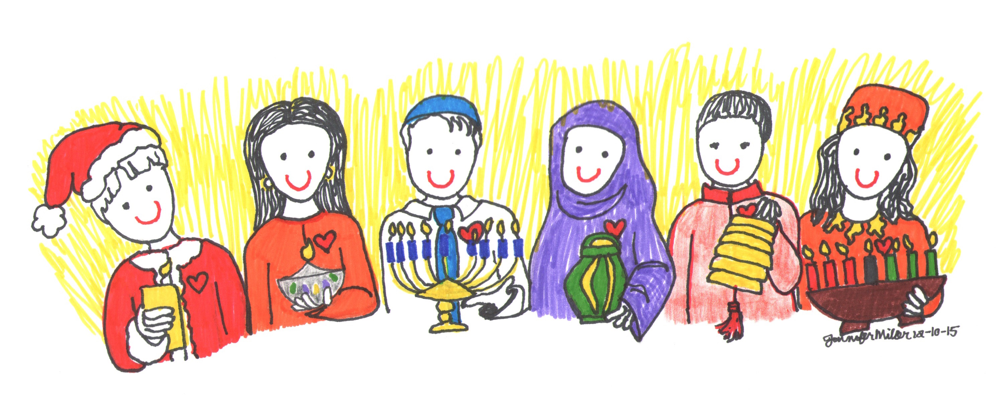
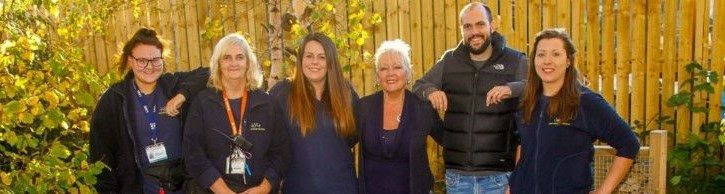

Over 100 million people in North America live in low-income families. While many of these families do not fall below the federal poverty threshold, statistics show that they do not bring home enough income to meet many basic needs for families. It can be difficult for low-income families throughout the whole year, and the holidays can make things even more difficult.
We believe in the future of cryptocurrency and see a major opportunity to contribute in aiding struggling people throughout the most stressful time of the year.
Blockchain technology provides the ultimate security and transparency to those who choose to donate. Only BNB and LTC are accepted as they are trusted networks, and to keep fees to a minimum.
Alone it may seem like there is little we can do, but together we can do so much. Every donation big or small is an invesment in the happiness of struggling adults and children across North America.
Our volunteers consist of pre-screened American, and Canadian individuals who all share the same passion for reaching out and helping the community.
Every member has 5+ years experience in volunteer work for renowned organizations such as Red Cross, Telemiracle, Salvation Army, and Peace Corps. These members are responsible depending on location for the first hand interacton with the local charities that recieve donations from Hopeful Holidays.
Our vision is to reach out all of our hands and help people of similair situation globally. Cryptocurrency makes that goal attainable through its ease of use from anywhere in the world.
Donations are recieved through multi-signature wallets to improve security, meaning that it takes multiple authorizations from trustees before funds can be accessed.
"In addition to providing gifts and clothes to children for Christmas, the Salvation Army also organizes programs that provide financial assistance for bills and utility payments over the holidays as well as meal delivery services for low-income and underserved families. Everyone deserves full belly and a warm home and the Salvation Army works to ensure that happens over the holidays and all year long."
"Former NFL running back Warrick Dunn has gone above and beyond to give back to the community. His charity, Warrick Dunn Charities, provides furnishings, a stocked pantry, toiletries, and down payment assistance for single parents through its Homes for the Holidays program so everyone can have a home for the holidays. After his first season in the NFL Dunn started Homes for the Holidays in tribute to his mother and her longtime dream of homeownership. Twenty-two years later, the charity has helped over 170 families make the dream of homeownership come true."
"Many single moms fall in the gap above the poverty level, meaning that they struggle financially but do not qualify for support services or program subsidies. Single moms also face social and emotional challenges, causing them to feel isolated or depressed. That’s where the AASM Project lends a hand. Their mentoring programs help single mothers with personal wellbeing, finances, relationships, career enhancement and social and emotional enrichment."